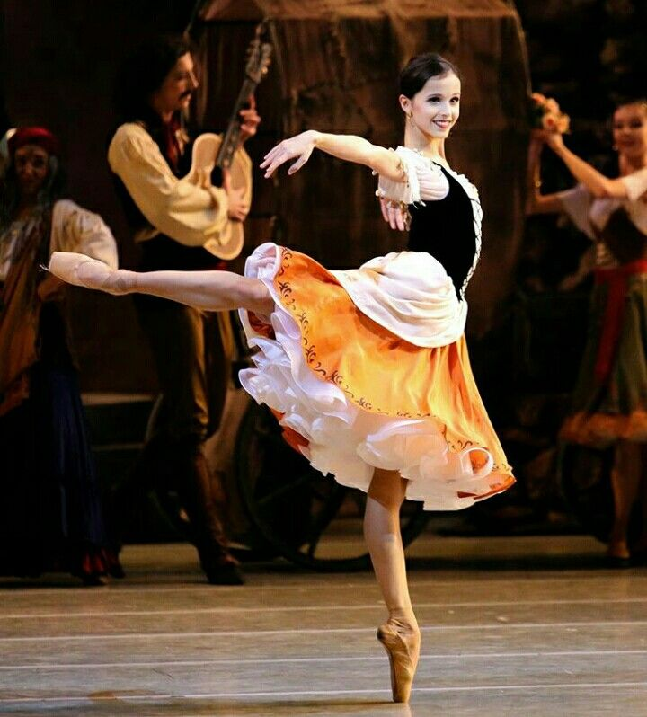
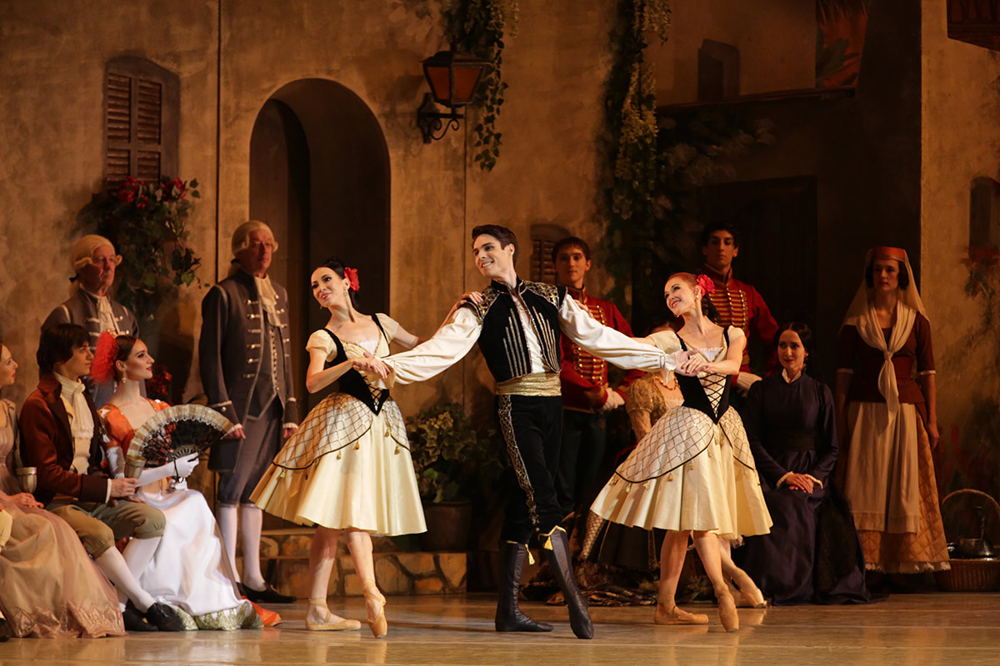

Olá bailarino(a) ou interessado na dança! Quer saber mais sobre o enredo do ballet clássico Paquita? Está no site correto! Confira abaixo:
Compositor musical: Edouard Deldevez e Ludwing Minkus;
Coreógrafos: Joseph Mazilier e Paul Foucher;
Estreia: Ópera de Paris (1846);
No primeiro ato: O ballet se inicia na Espanha em Saragoça, onde está ocorrendo o funeral do irmão do general. Estão presentes o filho do general, Lucien e a parente do governador Dom Lopez, Serafina.
Havia um grupo de ciganos, que possuia o líder Indigo, cigano apaixonado por Paquita, uma linda cigana que adorava dançar, porém era triste, pois não conhecia sua família, apenas tinha um medalhão com a foto de seu pai.
Os ciganos acaba chegando no funeral e Lucien se apaixona por Paquita, porém Dom Lopez não gosta, já que quer que Lucien se case com Serafina. Indigo também não aprova, já que gosta de Paquita. Então Dom Lopez se junta com Indigo para matar Lucien.
Paquita ouve o plano dos dois, onde Indigo irá matá-lo na casa dele. Indigo chama o Lucien para uma visita em sua casa e coloca uma poçaõ do sono na bebida de Lucien, porém, escondida Paquita troca os copos rapidamente. Paquita então aparece e dança com Indigo, enquanto Lucien finge dormir. Aos poucos Indigo adormece e Paquita e Lucien fogem. Indigo quase é morto pelos matadores de Lucien, que se confundem.
No segundo ato: Paquita e Lucien fogem para um baile da realeza e lá encontram Dom Lopez e o general, o casal então denuncia a tentativa de assassinato e Dom Lopez é preso.
Lucien pede Paquita em casamento e ela fica confusa, pois ela é uma simples cigana. Porém, ao ver um quadro do falecido irmão do general, percebe que é a foto de seu pai no medalhão, ou seja, Paquita pertence a realeza, então aceita o pedido de Lucien.